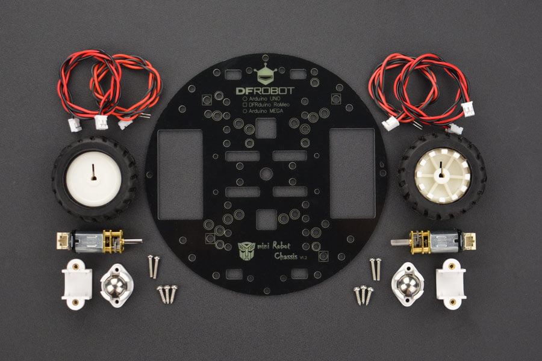

Programming, robotics, traveling
Official site | Github | Aliexpress
2WD miniQ robotic platform is especially designed for students and hobbyists. It’s versatile and small, suitable for most indoors applications. It features high quality and powerful metal gear motors which make it a speedy robot. It is ideal for maze competition and educational courses, and is very easy to assemble, check out our assembly video below. Only requires 8 screws to get the job done and you can use our sample codes on our Wiki pages.
If you are planning to get started building a robot, as a proof of concept, its small body and light weight makes it a great choice. This robot can easily be used and tested on a desk or small area, easily assembled and expanded. An extra set of stand off and screws might come handy. It’s round shape helps when moving around objects, avoiding obstruction. The platform has convenient drillings that helps placing sensors or other screwable parts like custom designed casing.
To drive this robot, you may need the Romeo (Romeo V2- an Arduino Robot Board (Arduino Leonardo) with Motor Driver), the Romeo BLE (Arduino Robot Control Board with Bluetooth 4.0), or standard arduino with motor shield.

Parts in Russian stores: